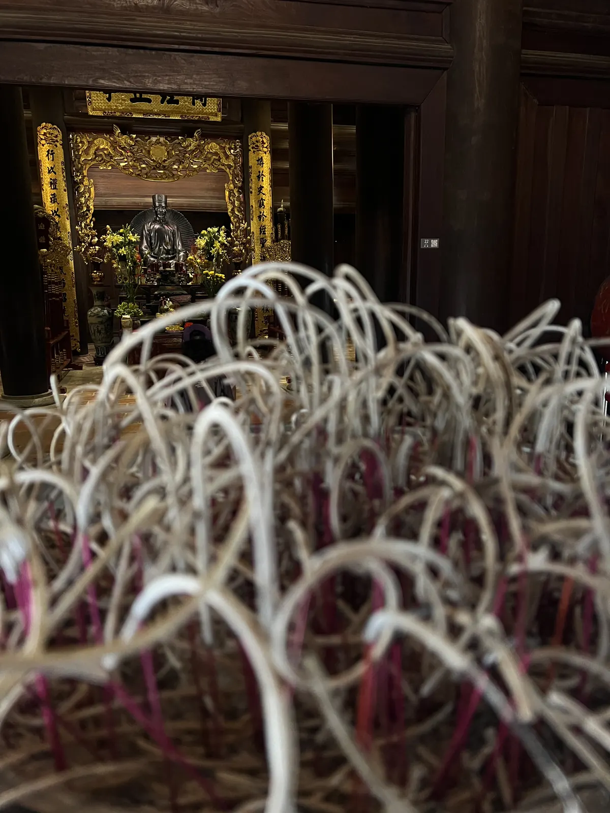

🇻🇳 Hanoi Guide: 15 Orte – Pho, Hoan-Kiem-See, Eierkaffee, Bia Hơi & Hidden Gems

Inhaltsverzeichnis
Hanoi ist chaotisch, laut und köstlich. Preise und Zeiten sind Richtwerte (Stand 2026).
🗺️ Karte: alle 9 Orte
Meine Story in Hanoi
So habe ich Hanoi kennengelernt: Pho um 6 Uhr morgens auf einem Plastikstuhl – besser als jedes Restaurant. Mein Rat: früh raus zum Hoan-Kiem-See, wenn die Stadt Tai-Chi macht, und abends ein Bia Hơi in der Altstadt, frisch gebraut und für Kleingeld. Im Februar 2026 bin ich einmal von Nord nach Süd durch Vietnam gereist.
Dieser Guide enthält Werbe-Links (GetYourGuide, Omio). Wenn du darüber buchst, bekomme ich eine kleine Provision – du zahlst keinen Cent mehr. Preise und Öffnungszeiten ändern sich – vor dem Besuch kurz prüfen.
🆓 Kostenlos erleben
6 Orte in Hanoi, die du ohne Eintritt oder komplett gratis erleben kannst (bei manchen kostet nur ein Teil, z. B. Turm oder Museum):
Auf einen Blick
So kommst du hin und herum
Hanoi wird vom Flughafen Noi Bai angeflogen. Zwischen den Städten fliegst du am besten – die Inlandsflüge sind günstig.
Der Flughafen Noi Bai liegt rund 30 bis 45 Minuten von der Altstadt entfernt; Taxi, Grab und Flughafenbusse fahren ins Zentrum (Preise vorher prüfen). In der Stadt nutzt du Grab, Taxi oder gehst zu Fuß. Bargeld in Dong ist praktisch; Geldautomaten gibt es überall.
Tipp: Lade die Grab-App vor der Ankunft, dann musst du nicht um Preise feilschen.
1. Must-Sees
Hoan-Kiem-See am Morgen🆓 Kostenlos erlebbar
Früh raus, wenn die Menschen Tai-Chi machen.
Der Hoan-Kiem-See liegt mitten in Hanoi und ist das Herz der Stadt. Früh am Morgen laufen, tanzen und machen Einheimische Tai-Chi am Ufer, später kommen Spaziergänger und Paare. Auf einer kleinen Insel steht der Turm der Schildkröte, und der rote Holzsteg Huc führt zum Ngoc-Son-Tempel auf einer Insel im See.
Am Wochenende sind Straßen rund um den See teils autofrei, dann ist es besonders lebendig (Zeiten vorher prüfen). Eine Runde um den See dauert etwa 30 bis 40 Minuten.
Tipp: Sei um 6 Uhr da und lauf eine Runde um den See.
Eierkaffee im Café Giảng
Bún chả in Hương Liên
Altstadt der 36 Gassen🆓 Kostenlos erlebbar
Die Altstadt von Hanoi besteht aus engen Gassen, die ursprünglich nach Handwerk und Waren benannt wurden: Silber, Seide, Bambus, Kupfer. Heute reihen sich Läden, Cafés, Garküchen und Hostels aneinander, dazwischen drängen Mopeds. Es ist laut, bunt und chaotisch – und genau das ist der Reiz.
Überquere Straßen langsam und gleichmäßig, dann weichen dir die Mopeds aus. Plane mindestens einen halben Tag zum Treiben lassen ein.
Tipp: Lass dich treiben und überquere Straßen langsam.
Literaturtempel (Văn Miếu)
Der Literaturtempel stammt aus dem 11. Jahrhundert und war Vietnams erste Universität. Fünf Höfe, Torbögen und Steinstelen auf Schildkröten, auf denen die Namen von Absolventen verzeichnet sind. Im Hof herrscht trotz der Besucher eine ruhige Stimmung.
Komm am frühen Morgen oder nachmittags, um Gruppen zu meiden. Eintritt und Zeiten vorher prüfen.
Tipp: Komm früh am Morgen.

Hỏa-Lò-Gefängnis
Das Hỏa-Lò-Gefängnis wurde von den Franzosen im 19. Jahrhundert gebaut und später von den Amerikanern „Hanoi Hilton“ genannt. Das Museum zeigt Zellen, Ausstellungsstücke und Geschichten aus Kolonialzeit und Krieg. Es ist ein bedrückender, aber lehrreicher Ort.
Plane ein bis zwei Stunden ein. Preise und Öffnungszeiten vorher prüfen.
Tipp: Plane ein bis zwei Stunden ein.
Wasserpuppentheater
Das Wasserpuppentheater ist eine vietnamesische Tradition: Puppen tanzen auf dem Wasser, begleitet von Live-Musik und Gesang. Die Aufführungen dauern rund eine Stunde und erzählen Geschichten vom Dorfleben, Fischern und Legenden. Es ist touristisch, aber charmant.
Tickets besser im Voraus buchen; Zeiten und Preise vorher prüfen.
Tipp: Buche Tickets im Voraus.
2. Hidden Gems
Pho um 6 Uhr auf dem Plastikstuhl💎 Hidden Gem
Bia Hơi in der Altstadt💎 Hidden Gem
Train Street💎 Hidden Gem🆓 Kostenlos erlebbar
In einer schmalen Gasse in Hanoi fährt der Zug dicht an Wohnhäusern und Cafés vorbei. Das ist spektakulär, aber auch gefährlich; die Regeln und der Zugang ändern sich, und zeitweise ist die Gasse für Besucher gesperrt. Informiere dich vorher über den aktuellen Stand.
Halte immer Abstand zu den Gleisen und folge den Anweisungen vor Ort. Sicherheit geht vor Foto.
Tipp: Prüfe vorher den aktuellen Stand und halte Abstand.
Dong-Xuan-Markt & Nachtmarkt💎 Hidden Gem🆓 Kostenlos erlebbar
Der Dong-Xuan-Markt ist die größte Markthalle der Altstadt und bietet Kleidung, Haushaltswaren, Stoffe und Lebensmittel. Am Wochenende gibt es am Abend einen Nachtmarkt auf den Straßen der Altstadt mit Essen und Souvenirs (Zeiten vorher prüfen).
Handle freundlich und frag nach dem Preis. Halte Taschen vorne.
Tipp: Komm am Wochenende abends.
Tay Ho (West Lake) & Tran-Quoc-Pagode💎 Hidden Gem🆓 Kostenlos erlebbar
Der Westsee im Norden der Stadt ist ein ruhigeres Viertel mit Cafés, Restaurants und Seepromenade. Auf einer kleinen Halbinsel im See steht die Tran-Quoc-Pagode, eine der ältesten Pagoden Hanois. Am Abend ist der Sonnenuntergang schön.
Du erreichst den See per Taxi oder Grab in rund 15 bis 20 Minuten aus der Altstadt.
Tipp: Komm zum Sonnenuntergang.
Straßenküche: Bún chả, Phở, Bánh mì & Co.
Hanoi ist eine Stadt zum Essen: Phở bò am Morgen, Bún chả mittags, Chả cá (gebratener Fisch mit Dill), Bánh cuốn (Reisröllchen) und Eierkaffee. Setz dich auf einen Plastikhocker und bestell, was die Einheimischen essen.
Preise sind meist niedrig; frag trotzdem nach dem Preis. Achte auf Stände mit viel Betrieb.
Tipp: Wähle Stände mit viel Betrieb.
Tagesausflug: Ha Long Bay oder Ninh Binh
Von Hanoi aus erreichst du die Halong-Bucht mit ihren Kalksteinfelsen (rund drei bis vier Stunden Fahrt) oder Ninh Binh mit Reisfeldern, Flüssen und Karstbergen (etwa zwei Stunden). Beide Orte sind per Tour oder Zug/Bus möglich.
Ninh Binh eignet sich als Tagesausflug, für Ha Long lohnt sich eher eine Übernachtung. Anbieter und Preise vorher vergleichen.
Tipp: Ninh Binh als Tagesausflug, Ha Long mit Übernachtung.
St.-Joseph-Kathedrale🆓 Kostenlos erlebbar
Die neugotische Kathedrale wurde 1886 geweiht und erinnert mit ihren zwei grauen Türmen an Notre-Dame in Paris. Sie steht mitten im Altstadtviertel, nur wenige Minuten vom Hoan-Kiem-See entfernt, und ist bis heute eine aktive Kirche.
Der Platz davor ist am Abend Treffpunkt: Rundherum verkaufen kleine Cafés trà chanh, eiskalten Tee mit Limette, den man auf Plastikhockern trinkt und dabei auf die beleuchtete Fassade schaut.
Tipp: Zur Messe angemessen kleiden – Schultern und Knie bedeckt.
Was Vietnam ausmacht
Mopeds überall, Plastikhocker am Straßenrand, auf denen das beste Essen des Landes serviert wird. Vietnam stand rund tausend Jahre unter chinesischer Herrschaft, später unter französischer Kolonialherrschaft – die Baguettes für Bánh mì sind ein Erbe davon. 1976 wurde das Land wiedervereinigt.
📍 Diesen Guide in Google Maps speichern
1. Schnell: Route öffnen
2. Dauerhaft: als eigene Karte (2 Minuten)
- Lade die Datei mit allen Pins herunter (KML-Button unten).
- Öffne Google My Maps → „Neue Karte erstellen“ → „Importieren“ → Datei auswählen.
- Fertig – alle Orte stehen exakt an der richtigen Stelle, mit Nummer, Tipp und Link zum Guide.
- In der Google-Maps-App findest du die Karte unter „Gespeichert“ → „Karten“, auch unterwegs.
⬇️ Alle Pins für Google Maps (KML) ⬇️ Ortsliste herunterladen (CSV)
3. Einzeln speichern
Dein Plan
Tag 1: Ein Tag in Hanoi
- 6 Uhr – Hoan-Kiem-See, Pho auf dem Plastikstuhl
- Vormittag – Literaturtempel, Altstadt
- Mittag – Bún chả
- Nachmittag – Hỏa-Lò-Gefängnis, Eierkaffee im Café Giảng
- Abend – Wasserpuppentheater, Bia Hơi
Häufige Fragen
Wie reise ich zwischen den Städten?
Am besten per Flug – günstig.
Wie viele Tage braucht man in Hanoi?
Ist Hanoi sicher?
🗺️ Alle Orte auf meiner Karte → Mehr Guides und Reels auf Instagram: @hiddengem.atlas
Guide teilen: Per WhatsApp